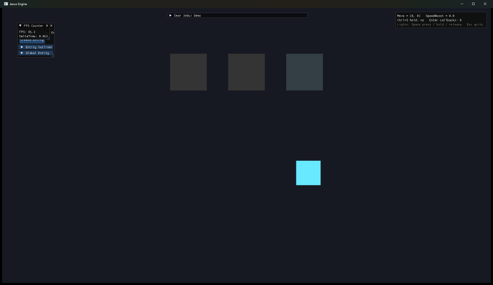

Loading...
Searching...
No Matches
Input
Every kind of input binding in one place: a square you move with the arrow keys, three lights for Space's press, hold and release bindings, a key combination, a callback and quitting with Escape.

The release light (right) glows just after Space was let go; the HUD shows the action values
| Key | Action | Binding |
|---|---|---|
| Arrow keys | Move (glm::vec2, ADD) | Hold |
| Shift | SpeedBoost (float, OVERRIDE) | Hold |
| Space | SpacePressed, SpaceHeld, SpaceReleased | Press, hold, release |
| Ctrl + S | Save | Hold, two keys |
| Enter | Confirm, with a callback | Press |
| Esc | Quit | Press |
Declaring and binding
Actionsexamples/modules/Input.cpp
// DEFINE_INPUT_ACTION(Name, Type) creates Input::Actions::Name.
// Its bindings' values are added up (ADD).
DEFINE_INPUT_ACTION(Move, glm::vec2)
DEFINE_INPUT_ACTION(SpacePressed, bool)
DEFINE_INPUT_ACTION(SpaceHeld, bool)
DEFINE_INPUT_ACTION(SpaceReleased, bool)
DEFINE_INPUT_ACTION(Save, bool)
DEFINE_INPUT_ACTION(Confirm, bool)
DEFINE_INPUT_ACTION(Quit, bool)
// With OVERRIDE the value is the last triggered binding's value, not a sum.
// Untriggered: 0.
DEFINE_INPUT_ACTION_WITH_PARAMS(SpeedBoost, float, OVERRIDE)
Bindingsexamples/modules/Input.cpp
// Hold: active every frame the key is down.
Input::AddInputBindings_Hold(&Input::Actions::Move, {
{SDL_SCANCODE_UP, {0, -1}}, {SDL_SCANCODE_DOWN, {0, 1}},
{SDL_SCANCODE_LEFT, {-1, 0}}, {SDL_SCANCODE_RIGHT, {1, 0}},
});
Input::AddInputBindings_Hold(&Input::Actions::SpeedBoost, {
{SDL_SCANCODE_LSHIFT, 2.5f}, {SDL_SCANCODE_RSHIFT, 2.5f},
});
// The same key can drive several actions.
// Press: the frame it goes down. Release: the frame it comes up.
const SDL_Scancode space = SDL_SCANCODE_SPACE;
Input::AddInputBindings_Press(&Input::Actions::SpacePressed, {{space, true}});
Input::AddInputBindings_Hold(&Input::Actions::SpaceHeld, {{space, true}});
Input::AddInputBindings_Release(&Input::Actions::SpaceReleased, {{space, true}});
// A combo: one binding with several keys.
// For hold bindings, all of them must be down.
Input::AddInputBindings_Hold(&Input::Actions::Save, {
Input::SInputBinding<bool>({SDL_SCANCODE_LCTRL, SDL_SCANCODE_S}, true),
});
Input::AddInputBindings_Press(&Input::Actions::Confirm, {
{SDL_SCANCODE_RETURN, true},
});
Input::AddInputBindings_Press(&Input::Actions::Quit, {
{SDL_SCANCODE_ESCAPE, true},
});
Reading actions
Polling in a systemexamples/modules/Input.cpp
// Most game code polls actions from a system.
// Input is read before the systems run each frame.
.each([](flecs::entity entity, FTransformComponent& transform,
FTexture2DComponent& sprite) {
const float dt = entity.world().delta_time();
const std::string name = entity.name().c_str();
if (name == "Player") {
const glm::vec2 direction = Input::GetValue(Input::Actions::Move);
const glm::vec2 move = direction * 60.f * std::max(1.f, boost) * dt;
glm::vec3& location = transform.Location;
location.x = std::clamp(location.x + move.x, 0.f, ScreenW - 16.f);
location.y = std::clamp(location.y + move.y, 0.f, ScreenH - 16.f);
bSaving = Input::IsActionTriggered(Input::Actions::Save);
const SDL_FColor savingColor {0.5f, 1.f, 0.5f, 1.f};
const SDL_FColor normalColor {0.4f, 0.9f, 1.f, 1.f};
sprite.Color = bSaving ? savingColor : normalColor;
return;
}
if (name == "PressLight") {
if (Input::IsActionTriggered(Input::Actions::SpacePressed)) {
PressedGlow = 1.f;
}
PressedGlow = std::max(0.f, PressedGlow - dt * 2.f);
const float glow = PressedGlow;
sprite.Color = {0.2f + glow * 0.8f, 0.2f + glow * 0.6f, 0.2f, 1.f};
} else if (name == "HoldLight") {
HeldGlow = bHeld ? 1.f : 0.f;
sprite.Color = {0.2f, 0.2f + HeldGlow * 0.8f, 0.2f, 1.f};
} else if (name == "ReleaseLight") {
if (Input::IsActionTriggered(Input::Actions::SpaceReleased)) {
ReleasedGlow = 1.f;
}
ReleasedGlow = std::max(0.f, ReleasedGlow - dt * 2.f);
const float glow = ReleasedGlow;
sprite.Color = {0.2f, 0.2f + glow * 0.5f, 0.2f + glow * 0.8f, 1.f};
}
});
A callbackexamples/modules/Input.cpp
// A callback runs during Input::UpdateInputs() on every frame the action triggers.
// Register one callback per action: each extra one makes all of them run again.
++ConfirmCount;
Log::InputDemo::Info("Confirm pressed ({} times)", ConfirmCount);
});
Quitting from code
Escape pushes a quit eventexamples/modules/Input.cpp
// Input::ShouldQuit() becomes true when SDL sees a quit event (closing the window).
// To quit from code, push one yourself; Engine::Run() returns on the next frame.
world.system("QuitOnEscape").run([](flecs::iter& it) {
if (Input::IsActionTriggered(Input::Actions::Quit)) {
SDL_Event quit {};
quit.type = SDL_EVENT_QUIT;
SDL_PushEvent(&quit);
}
while (it.next()) {}
});
Full source
Input.cppexamples/modules/Input.cpp
// Module example: input actions.
//
// Controls:
// Arrow keys move the square (hold bindings, values added up)
// Shift hold to move faster (an OVERRIDE action)
// Space the three lights show its press, hold and release bindings
// Ctrl + S a combo: both keys must be held
// Enter an action with a callback (see the log)
// Escape quit
//
// Shows: DEFINE_INPUT_ACTION and DEFINE_INPUT_ACTION_WITH_PARAMS,
// press / hold / release bindings, combo bindings, operators,
// polling with GetValue / IsActionTriggered, RegisterActionCallback,
// and quitting from code. Uses no files.
#include <Module.hpp>
#include <Log/Module.hpp>
#include <Input/Module.hpp>
#include <Editor/Module.hpp>
#include <Filesystem/Module.hpp>
#include <Types/Graphics.hpp>
#include <Gameplay/ECS/Module.hpp>
#include <Gameplay/ECS/Modules/TransformModule.hpp>
#include <Gameplay/ECS/Modules/GraphicsModule.hpp>
#include <Rendering/Components/RenderingComponent.hpp>
#include <SDL3/SDL_events.h>
#include <imgui.h>
#include <algorithm>
#include <cstdlib>
// The engine's components (FTransformComponent, FTexture2DComponent, ...).
using namespace Components;
DECLARE_LOGGER(InputDemo, debug)
// DEFINE_INPUT_ACTION(Name, Type) creates Input::Actions::Name.
// Its bindings' values are added up (ADD).
DEFINE_INPUT_ACTION(Move, glm::vec2)
DEFINE_INPUT_ACTION(SpacePressed, bool)
DEFINE_INPUT_ACTION(SpaceHeld, bool)
DEFINE_INPUT_ACTION(SpaceReleased, bool)
DEFINE_INPUT_ACTION(Save, bool)
DEFINE_INPUT_ACTION(Confirm, bool)
DEFINE_INPUT_ACTION(Quit, bool)
// With OVERRIDE the value is the last triggered binding's value, not a sum.
// Untriggered: 0.
DEFINE_INPUT_ACTION_WITH_PARAMS(SpeedBoost, float, OVERRIDE)
constexpr float ScreenW = 320.f, ScreenH = 180.f;
// Brightness of the three Space indicators; press and release flash, then fade.
static float PressedGlow = 0.f, HeldGlow = 0.f, ReleasedGlow = 0.f;
static int ConfirmCount = 0;
static bool bSaving = false;
// ---- Scene helpers (the same in every example) -------------------------------
static void RegisterSolidTexture(const std::string& AssetPath, int Size) {
SDL_Surface* surface = SDL_CreateSurface(Size, Size, SDL_PIXELFORMAT_ABGR8888);
const Uint32 white = SDL_MapSurfaceRGBA(surface, 255, 255, 255, 255);
SDL_FillSurfaceRect(surface, nullptr, white);
TObjectPtr<Graphics::STexture2D> texture;
texture->Surface = surface;
texture->Width = static_cast<float>(Size);
texture->Height = static_cast<float>(Size);
texture->AssetPath = AssetPath;
TObjectPtr<Filesystem::SAssetData> assetData;
assetData->AssetPath = AssetPath;
assetData->AssetName = AssetPath;
assetData->AssetType = Filesystem::TEXTURE;
assetData->ObjectData = texture;
Filesystem::RegisterAssetData(assetData);
}
World.entity("Camera")
.set<FTransformComponent>({})
.set<FCameraComponent>({
.CameraSize = {ScreenW, ScreenH},
.Boundaries = {0, 0, 0, 0},
})
.set<FLightComponent>({ .Radius = 100.f, .Intensity = 2.4f });
World.entity("Background")
.set<FTransformComponent>({})
.set<FTexture2DComponent>({
.Sprite = { .SpriteSheet = {"White"} },
.TextureSize = {ScreenW, ScreenH},
.Color = Color,
})
.set<FRenderingComponent>({ .RenderLayer = Renderer::Background });
}
glm::vec2 Position, glm::vec2 Size, SDL_FColor Color) {
return World.entity(Name)
.set<FTransformComponent>({ .Location = {Position.x, Position.y, 0.f} })
.set<FTexture2DComponent>({
.Sprite = { .SpriteSheet = {"White"} },
.TextureSize = Size,
.Color = Color,
})
.set<FRenderingComponent>({ .RenderLayer = Renderer::Entities });
}
protected:
void Draw_Internal() override {
ImGui::SetWindowCollapsed("Dear ImGui Demo", true, ImGuiCond_Once);
const ImGuiViewport* viewport = ImGui::GetMainViewport();
const ImVec2 topRight {viewport->Pos.x + viewport->Size.x - 16.f,
viewport->Pos.y + 16.f};
ImGui::SetNextWindowPos(topRight, ImGuiCond_Always, {1.f, 0.f});
const ImGuiWindowFlags flags = ImGuiWindowFlags_NoDecoration
| ImGuiWindowFlags_AlwaysAutoResize
| ImGuiWindowFlags_NoInputs;
ImGui::Begin("Input", nullptr, flags);
const glm::vec2 move = Input::GetValue(Input::Actions::Move);
ImGui::Text("Move = (%.0f, %.0f) SpeedBoost = %.1f", move.x, move.y, boost);
const char* saving = bSaving ? "yes" : "no";
ImGui::Text("Ctrl+S held: %s Enter callbacks: %d", saving, ConfirmCount);
ImGui::TextDisabled("Lights: Space press / hold / release. Esc quits.");
ImGui::End();
}
};
int main() {
RegisterSolidTexture("CollisionTexture", 8);
RegisterSolidTexture("White", 8);
flecs::world& world = ECS::GetWorld();
// Hold: active every frame the key is down.
Input::AddInputBindings_Hold(&Input::Actions::Move, {
{SDL_SCANCODE_UP, {0, -1}}, {SDL_SCANCODE_DOWN, {0, 1}},
{SDL_SCANCODE_LEFT, {-1, 0}}, {SDL_SCANCODE_RIGHT, {1, 0}},
});
Input::AddInputBindings_Hold(&Input::Actions::SpeedBoost, {
{SDL_SCANCODE_LSHIFT, 2.5f}, {SDL_SCANCODE_RSHIFT, 2.5f},
});
// The same key can drive several actions.
// Press: the frame it goes down. Release: the frame it comes up.
const SDL_Scancode space = SDL_SCANCODE_SPACE;
Input::AddInputBindings_Press(&Input::Actions::SpacePressed, {{space, true}});
Input::AddInputBindings_Hold(&Input::Actions::SpaceHeld, {{space, true}});
Input::AddInputBindings_Release(&Input::Actions::SpaceReleased, {{space, true}});
// A combo: one binding with several keys.
// For hold bindings, all of them must be down.
Input::AddInputBindings_Hold(&Input::Actions::Save, {
Input::SInputBinding<bool>({SDL_SCANCODE_LCTRL, SDL_SCANCODE_S}, true),
});
Input::AddInputBindings_Press(&Input::Actions::Confirm, {
{SDL_SCANCODE_RETURN, true},
});
Input::AddInputBindings_Press(&Input::Actions::Quit, {
{SDL_SCANCODE_ESCAPE, true},
});
// A callback runs during Input::UpdateInputs() on every frame the action triggers.
// Register one callback per action: each extra one makes all of them run again.
++ConfirmCount;
Log::InputDemo::Info("Confirm pressed ({} times)", ConfirmCount);
});
CreateCameraAndBackground(world, {0.09f, 0.1f, 0.13f, 1.f});
SpawnRect(world, "Player", {150.f, 100.f}, {16.f, 16.f}, {0.4f, 0.9f, 1.f, 1.f});
SpawnRect(world, "PressLight", {110.f, 30.f}, {24.f, 24.f}, {1.f, 1.f, 1.f, 1.f});
SpawnRect(world, "HoldLight", {148.f, 30.f}, {24.f, 24.f}, {1.f, 1.f, 1.f, 1.f});
SpawnRect(world, "ReleaseLight", {186.f, 30.f}, {24.f, 24.f}, {1.f, 1.f, 1.f, 1.f});
// Most game code polls actions from a system.
// Input is read before the systems run each frame.
.each([](flecs::entity entity, FTransformComponent& transform,
FTexture2DComponent& sprite) {
const float dt = entity.world().delta_time();
const std::string name = entity.name().c_str();
if (name == "Player") {
const glm::vec2 direction = Input::GetValue(Input::Actions::Move);
const glm::vec2 move = direction * 60.f * std::max(1.f, boost) * dt;
glm::vec3& location = transform.Location;
location.x = std::clamp(location.x + move.x, 0.f, ScreenW - 16.f);
location.y = std::clamp(location.y + move.y, 0.f, ScreenH - 16.f);
bSaving = Input::IsActionTriggered(Input::Actions::Save);
const SDL_FColor savingColor {0.5f, 1.f, 0.5f, 1.f};
const SDL_FColor normalColor {0.4f, 0.9f, 1.f, 1.f};
sprite.Color = bSaving ? savingColor : normalColor;
return;
}
if (name == "PressLight") {
if (Input::IsActionTriggered(Input::Actions::SpacePressed)) {
PressedGlow = 1.f;
}
PressedGlow = std::max(0.f, PressedGlow - dt * 2.f);
const float glow = PressedGlow;
sprite.Color = {0.2f + glow * 0.8f, 0.2f + glow * 0.6f, 0.2f, 1.f};
} else if (name == "HoldLight") {
HeldGlow = bHeld ? 1.f : 0.f;
sprite.Color = {0.2f, 0.2f + HeldGlow * 0.8f, 0.2f, 1.f};
} else if (name == "ReleaseLight") {
if (Input::IsActionTriggered(Input::Actions::SpaceReleased)) {
ReleasedGlow = 1.f;
}
ReleasedGlow = std::max(0.f, ReleasedGlow - dt * 2.f);
const float glow = ReleasedGlow;
sprite.Color = {0.2f, 0.2f + glow * 0.5f, 0.2f + glow * 0.8f, 1.f};
}
});
// Input::ShouldQuit() becomes true when SDL sees a quit event (closing the window).
// To quit from code, push one yourself; Engine::Run() returns on the next frame.
world.system("QuitOnEscape").run([](flecs::iter& it) {
if (Input::IsActionTriggered(Input::Actions::Quit)) {
SDL_Event quit {};
quit.type = SDL_EVENT_QUIT;
SDL_PushEvent(&quit);
}
while (it.next()) {}
});
Log::InputDemo::Info("Try the arrow keys, Shift, Space, Ctrl+S and Enter.");
Log::InputDemo::Info("Escape quits.");
Engine::Run();
// Known issue: avoid the crash in static destructors after teardown.
std::quick_exit(0);
}
TObjectPtr< TEditorTool > Open()
Opens the tool of type TEditorTool, creating and registering it the first time.
Definition Module.hpp:25
void InitializePlugins()
Starts SDL and every engine module that needs starting, in dependency order, and opens the game windo...
void TeardownPlugins()
Shuts the engine modules down in reverse order and calls SDL_Quit().
void Run()
Runs the game loop until the window is closed: input, ECS systems, editor tools, rendering.
void RegisterAssetData(const TObjectPtr< SAssetData > &AssetData)
Adds an asset to the registry under AssetData->AssetPath.
#define DEFINE_INPUT_ACTION(InActionName, ValueType)
Declares Input::Actions::InActionName, an Input::SAction<ValueType> whose bindings' values are added ...
Definition InputTypes.hpp:103
#define DEFINE_INPUT_ACTION_WITH_PARAMS(InActionName, ValueType, Operator)
Like DEFINE_INPUT_ACTION, with a chosen Input::EInputModifierOperation (OVERRIDE, ADD,...
Definition InputTypes.hpp:98
void AddInputBindings_Hold(SAction< TValueType > *Action, std::initializer_list< SInputBinding< TValueType > > InputBindings)
Adds bindings that trigger every frame their key (or all their keys) are held down.
Definition Module.hpp:45
TActionValue GetValue(const SAction< TActionValue > &Action)
Returns the action's value this frame: its triggered bindings' values combined with its operator,...
Definition Module.hpp:72
void AddInputBindings_Release(SAction< TValueType > *Action, std::initializer_list< SInputBinding< TValueType > > InputBindings)
Adds bindings that trigger on the frame their key comes up.
Definition Module.hpp:40
void AddInputBindings_Press(SAction< TValueType > *Action, std::initializer_list< SInputBinding< TValueType > > InputBindings)
Adds bindings that trigger on the frame their key goes down (and on key repeat).
Definition Module.hpp:35
void RegisterActionCallback(SAction< TValueType > *Action, const std::function< void(const TValueType &)> &Function)
Calls Function with the action's value on every frame the action triggers, during Input::UpdateInputs...
Definition Module.hpp:97
bool IsActionTriggered(const SAction< TValueType > &Action)
Returns true if any of the action's bindings triggered this frame.
Definition Module.hpp:84
#define DECLARE_LOGGER(Namespace, InLogLevel)
Same as DECLARE_LOGGER_WITH_PARAMS with LOG_ALL outputs and the shared JanusEngine log file.
Definition Module.hpp:41
Definition World.hpp:20
What a sprite draws: Graphics::SSprite Sprite (texture path and cell), glm::vec2 TextureSize (32 × 32...
Definition RenderingComponent.hpp:19
Where an entity is: glm::vec3 Location, glm::vec3 Rotation, glm::vec3 Scale.
Definition TransformModule.hpp:20
One binding: the key(s) that trigger it, when (Input::EInputType) and the value it contributes.
Definition InputTypes.hpp:48